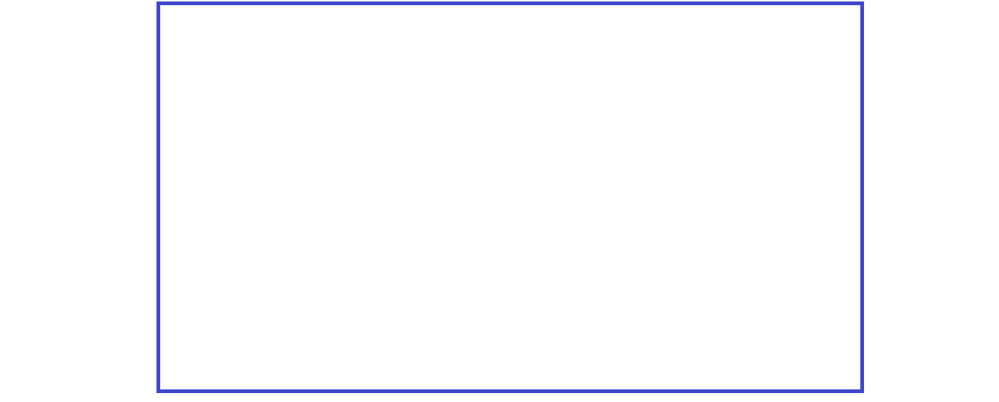
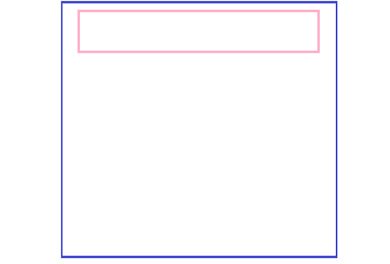
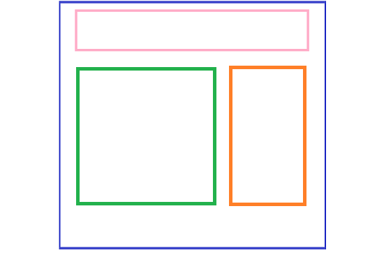
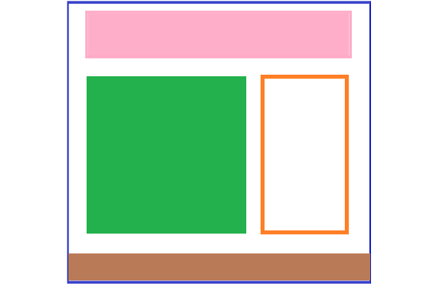

1. Crea Maquetación para tu diseño Web en Paint
1. Ve al boton Inicio
2.Te diriges a accesorios
3.Seleccionas Paint
4. Dentro de paint nos dirigimos a la opción: Inicio -Forma- Rectangulo-arrastramo el rectagulo al área de trabajo y dimensionamos el tamaño, en este caso será el container de nuestra página
5.Seleccionamos otro rectangulo, lo incorporamos en la parte superior del rectangulo anterior
Ya obtenemos nuestro encabezado
6.Agreguemos 2 container mas para el cuerpo de trabajo, en este caso será un section y un aside
7.Por último agregamos el footer y rellenamos de color si queremos nuestro container
Hemos terminado nuestra maqueta en Paint